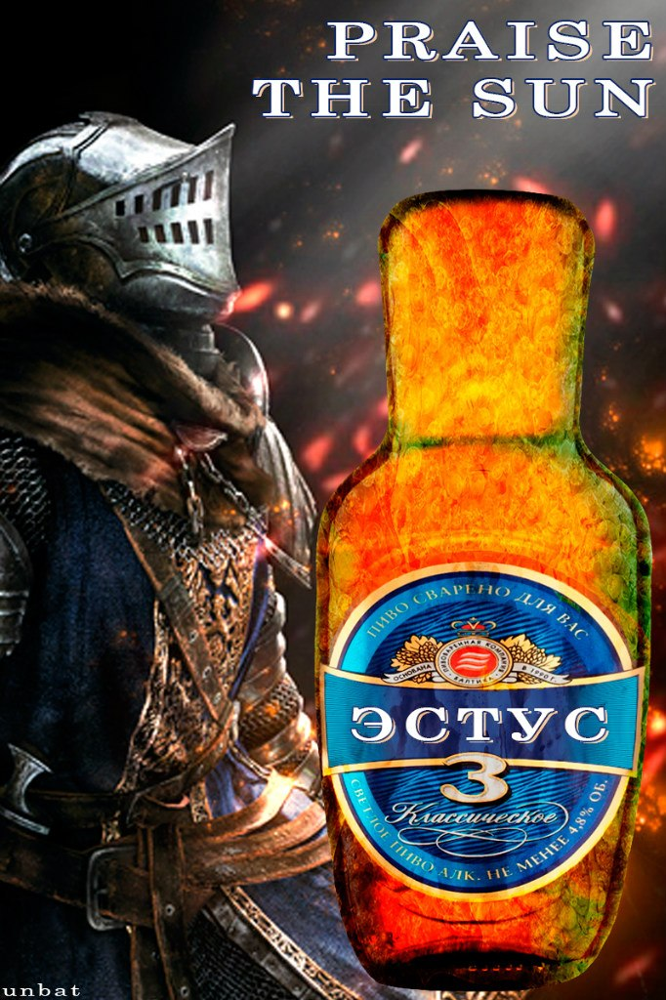

Эстус из Dark Souls
Алкогольных коктейлей оказалось так много, что мы не смогли ограничиться единственным рецептом, поэтому сделаем сразу два варианта одного и того же напитка.
Вариант первый.
- На одну порцию наполните стакан льдом. Добавьте 50 мл водки и понемногу ангостуры и ликёра из бузины. Влейте в алкогольную смесь 150 мл яблочного сока и перемешайте.
Вариант второй.
- На две порции пробейте в блендере 180 мл апельсинового сока без мякоти, сок одного лимона, 60 мл коричного виски и три кубика льда. Добавьте 180 мл имбирного пива. Перелейте в стеклянную бутылку с помощью воронки и, как пишет автор рецепта, постарайтесь не умереть.
вздрогнем!!!!!